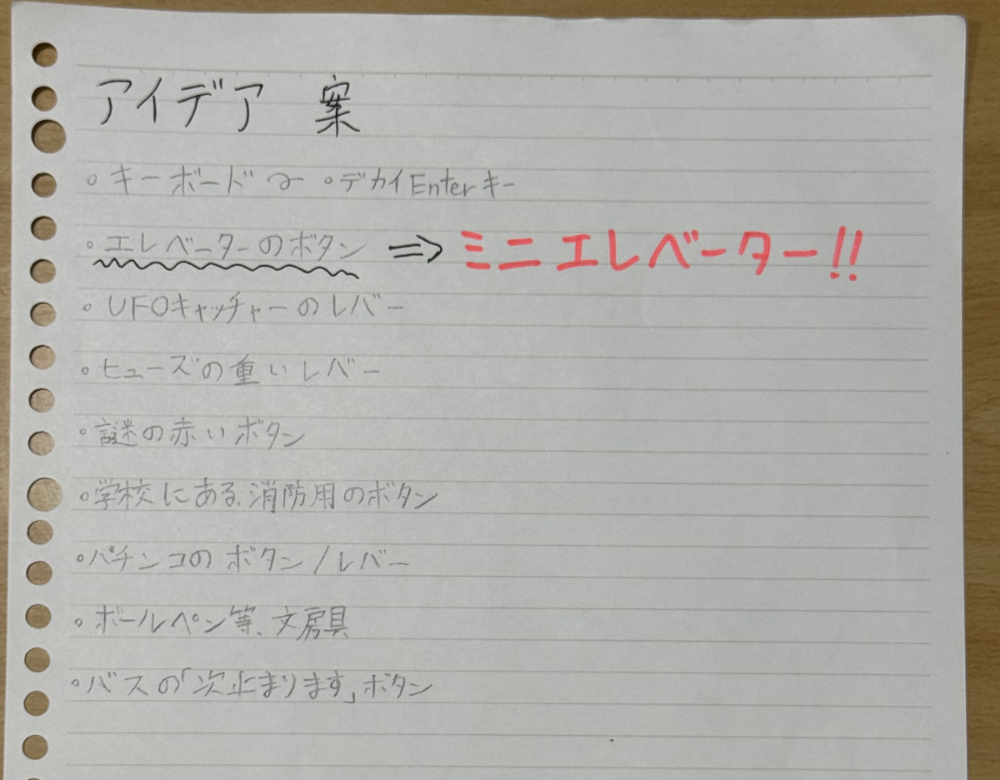
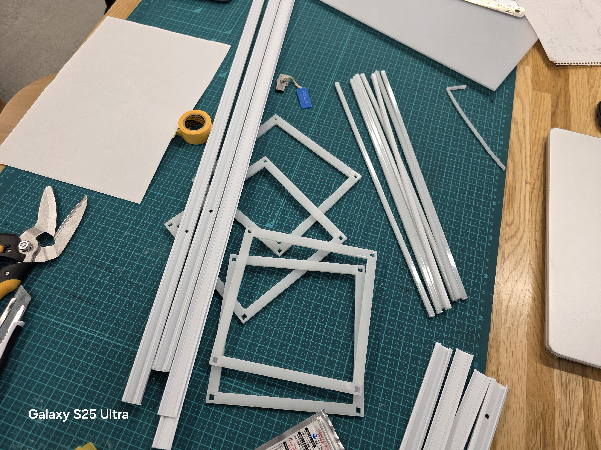
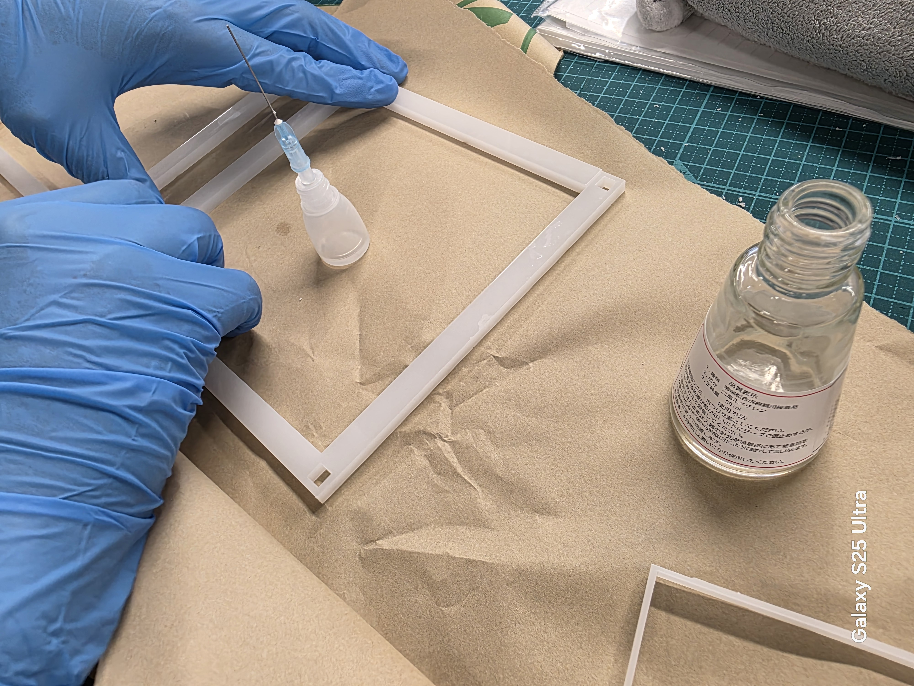
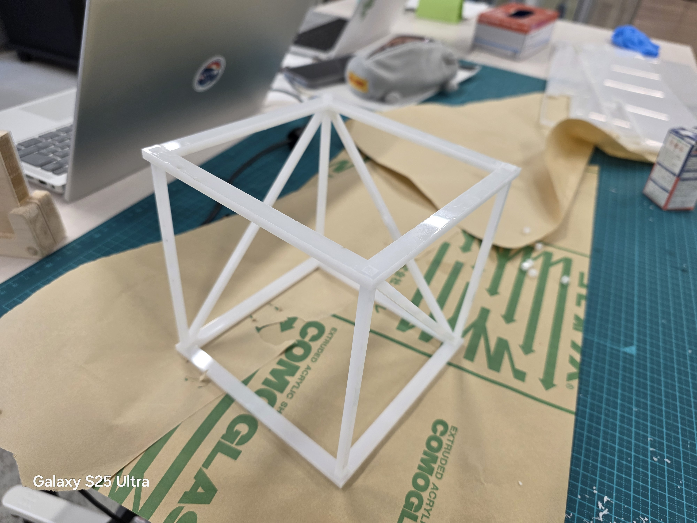
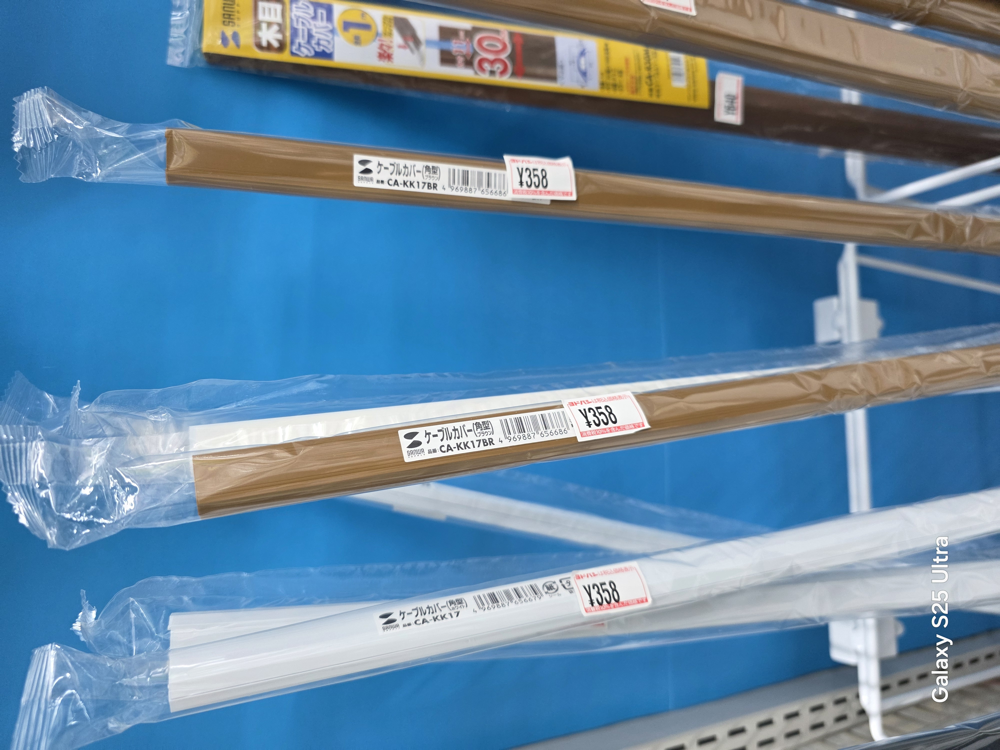
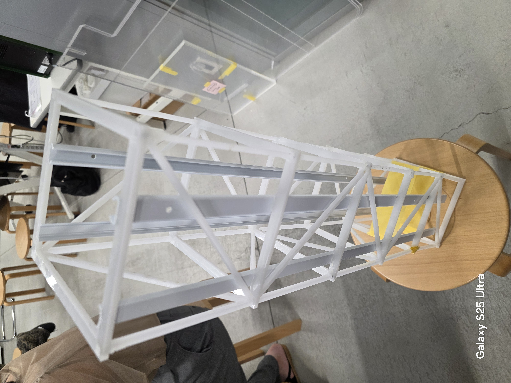
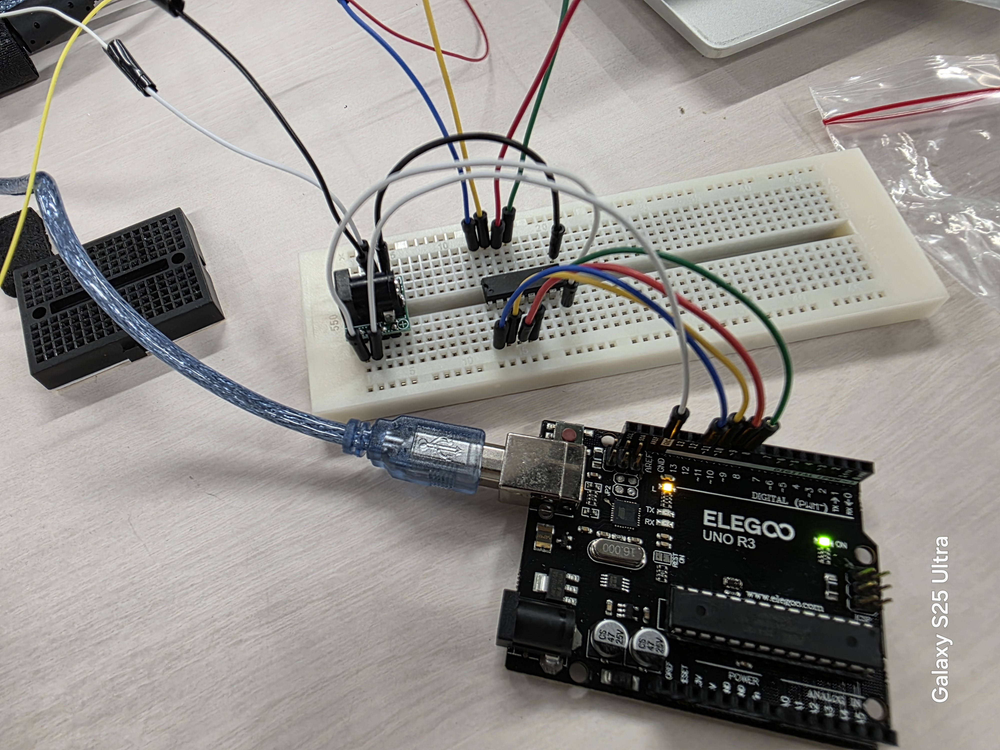
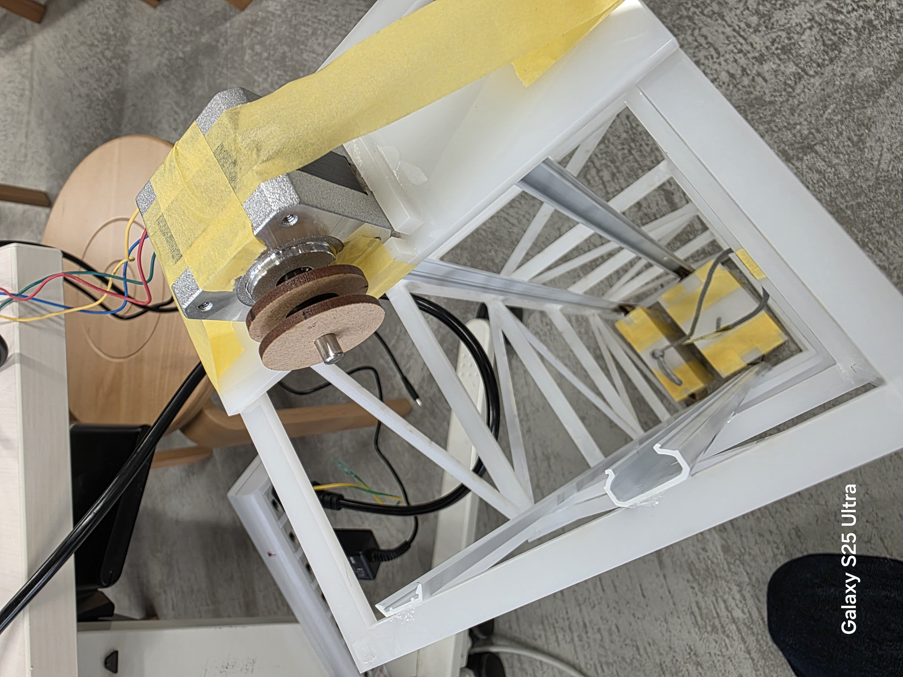
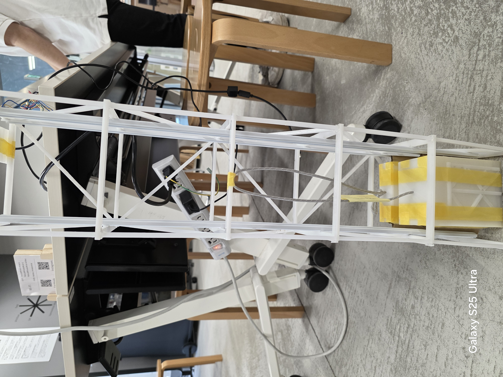
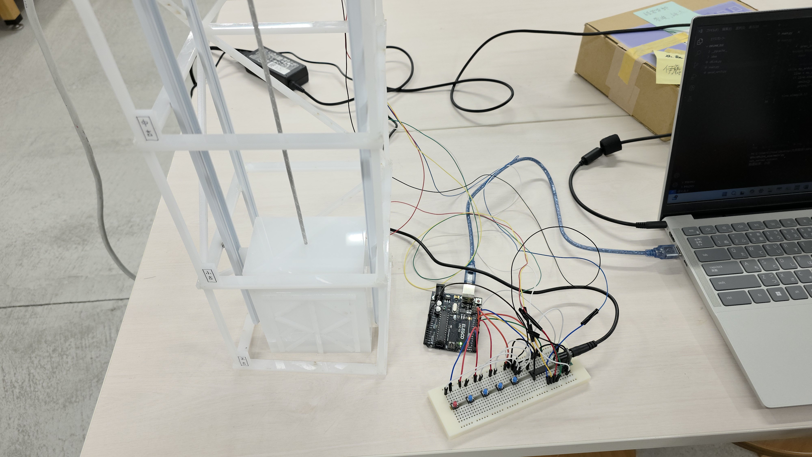

プロジェクトノート
〜スケッチ〜

〜概要〜
・今回は、Nickとともに『ミニエレベーター』を制作していくことにした。
話し合いの初段階では、押し心地のいいボタンを作る予定だったが、何か面白い機能をつけたいということに...そこから派生して、「エレベーターを作れば面白そう」ということで意見が纏まった。
〜プロセスメモ〜
・ー制作にあたって必要なもの（６月１日現時点）ー
01.本体素材（まだ未決定）
02.操作盤素材（スイッチボード的なやつ）
03.ステッピングモーター
04.サーボモーター
05.ブレッドボード
06.タクトスイッチ
07.LED
08.スピーカー
09.スポンジまたはバネ（スイッチの緩衝材として）
・ー構想ー
６月１日時点での構想↓

「■は考えないといけないこと、疑問等●は具体的にやること、→はやったこと」
■:"どこまで『エレベーター』として再現するか。" "強度はどうするか。" "外枠は何で作るのか...それともDCM等の完成品で代用するのか。"
●:"本体サイズの決定" "エレベーターにIOTを取り入れる"
→:"外枠の試作"
外枠のスケッチ↓

↑現時点での外枠スケッチ。
これをもとにとりあえず試作品を作ることにした。
最初、３Dモデリングで接続部のパーツを作ったが、授業時間を大幅にオーバーしてしまうことが発覚し、MDFで簡易的なものを作ることに...
それがこちら↓

これを制作した上で、さまざまな課題が見えた。
MDFに瞬間接着剤を塗って固定しようとしたが、なかなか接着できず強度が足りないことがわかった。
また、サイズも小さかったためNickと話し合って調整しなければいけない。
次回は具体的なサイズと素材について話し合い、IOTをどのようにして取り入れるのかを考える。（回数に応じてBGMを流すという案は出たが、まだ未定。）
6月15日
今週はMDFではなく、アクリル板で外枠を作ることにした。

このアクリル板を切り落とし、アクリル接着剤で接着した。
↓接着作業の様子

そして試作品２号機ができた。↓

２号機は１号機よりも強度が高く、安定性が格段と増した。素材はアクリル板で決定。
また、前回具体的にやることとして挙げていた本体サイズも決定した。話し合った結果、60~70cmくらいがちょうどいいだろうということになった。
その本体サイズに合わせてヨドバシカメラでケーブルカバーを買った。このケーブルカバーはエレベーターが動くように、滑車を動かすためのもの。

今週のまとめと課題
■:"スイッチボードの設計はどうするのか"
●:"エレベーターにIOTを取り入れる" "部品を調達し、Arduinoに組み込む"
→:"本体サイズの決定" "外枠の素材の決定"
6月22日
今週はエレベーターの原寸大のモデルを作った。

強度も申し分なく、滑車を走らせる用のレールを取り付けられた。
今週のまとめと課題
■:"どうやってIOTを組み込むか"
●:"スイッチボードの制作" " エレベーター本体の制作" "Arduinoのプログラムを組む"
→:"原寸大のモデルを作った"
7月6日
今週はついにモーターを取り付けて動作確認をするところまで進んだ。
配線の様子↓

最初は配線がよくわからず、苦戦していたがなんとか動いてくれたので一安心。

モーターの下に切り取ったスポンジを取りつけることで、モーターの振動を吸収するなどの工夫をした。
全体像はこちら↓

動いている動画はここから。思ったよりもスムーズに動いてくれた。
エレベーターの動作
今週のまとめと課題
■:"どうやってIOTを組み込むか"
●:"スイッチボードの制作"
→:"エレベーターの動作確認" "Arduinoのプログラムを組む"
7月13日
ついにエレベーター完成！！

詳細動画はココから↓